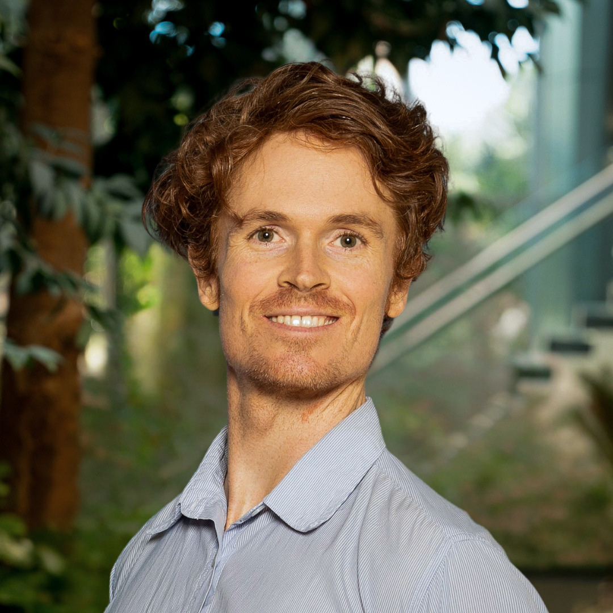

Let's go explore the universe through technology & discovery

Hello! I'm a Ph.D. student at the University of Southern Queensland, working at the intersection of astronomical instrumentation, CubeSats, and exoplanet science.
My research involves designing and testing space-based instruments, developing small-satellite mission concepts, and exploring innovative techniques for detecting and characterizing planets beyond our Solar System.
I completed my master's thesis at KU Leuven (Belgium), where I focused on the direct imaging of exoplanets. Much of the code from that work is available on my GitHub. I am currently expanding this research into a manuscript for submission to a peer-reviewed journal.
In parallel, I continue my work at UniSQ on a range of astrophysical projects. My current efforts include optical instrument design, CubeSat development, and broader initiatives to democratize space-based observational astronomy.
I'm always open to collaboration, especially on projects involving exoplanet characterization, modeling, observation, or astronomical hardware and software instrumentation.
You can also find my UniSQ staff profile here.
Feel free to reach out! My native language is English, but I am also happy to communicate in Español, 中文, Nederlands, 日本語, Français, 한국어, and عربي. Thank you for your interest!
Feel free to reach out through LinkedIn or GitHub. I'm always happy to connect with people interested in astronomy, instrumentation, and space engineering.